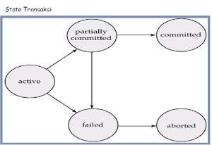

Muh. Dzulfiqar Website
D121181510
D121181510
Transaksi pada basis data merupakan sekumpulan unit proses,dalam hal ini query, yang memiliki awal dan akhir. Sekumpulan query tersebut diawali oleh syntax BEGIN dan diakhiri syntax END.
- Sebuah transaksi adalah unit eksekusi program yang mengakses dan mungkin
mengubah beberapa item data.
- Suatu transaksi harus melihat database yang konsisten.
- Selama eksekusi transaksi, database mungkin tidak konsisten.
- Ketika sebuah transaksi dianggap commit maka database harus konsisten.
Dua hal yang berkaitan dengan manajemen transaksi:
– Kegagalan fungsi (Failures), terdiri dari kegagalan perangkat keras (hardware) dan
system crash
– Eksekusi beberapa transaksi secara bersama
ACID merupakan kependekan dari (Atomicity, Consistency, isolation, Durability) yaitu 4 properti yang harus dimiliki pada transaksi pada basis data.
Untuk menjaga integritas data, database sistem harus menjamin:
- Atomicity. Jika semua operasi pada sebuah transaksi sukses maka transaksi dianggap
sukses, jika salahsatu operasi pada suatu transaksi gagal maka transaksi dianggap
gagal.
- Consistency. Eksekusi sebuah transaksi secara terisolasi bertujuan untuk menjaga
konsistensi database.
- Isolation. Meskipun ada beberapa transaksi yang berlangsung bersamaan, masing-
masing transaksi tidak boleh mengetahui transaksi lain yang sedang berlangsung. Hasil
transaksi sementara harus disembunyikan dari transaksi lain yang sedang berlangsung.
Sehingga, untuk pasangan transaksi Ta dan Tb, yang terlihat oleh Ta adalah Tb selesai
melakukan eksekusi sebelum Ta mulai, atau Tb memulai eksekusi setelah Ta selesai.
- Durability. Setelah sebuah transaksi sukses dilakukan, perubahan-perubahan yang
dibuatnya terhadap database bersifat permanen, bahkan jika terjadi kegagalan sistem.

Atomicity
Adalah suatu aturan dimana perubahan dilakukan secara keseluruhan atau tidak sama sekali. Sehingga jika di tengah transaksi terjadi kegagalan maka seruluruh perubahan akan di batalkan dan di kembalikan kekondisi semula. Kegagalan disini bisa terjadi karena aplikasi, system, database dsb.
Contoh (Ambil kasus transfer di suatu bank dari rek A ke rek B dengan nilai transfer 2500):
Maka stepnya adalah sebagai berikut:
1. Cek saldo A apakah mencukupi, jika mencukupi maka lanjut ke step ke-2. Jika tidak maka transaksi selesai dan tidak ada perubahan.
2. Kurangi saldo A sebesar 2500
3. Tambahkan saldo B sebesar 2500
Nah seluruh step diatas harus digabungkan sehingga apabila setelah step ke-2 terjadi kesalahan maka seluruh perubahan transaksi harus di batalkan. Setelah transaksi berhasil maka akan di lakukan commit.
Consistency
Menunjukkan konsistensi data yang ada setelah terjadi transaksi. Misalnya pada contoh kasus sebelumya, jika saldo A = 4000 dan saldo B = 500, maka setelah transaksi saldo A = 1500 dan saldo B = 3000. Nah beberapa hal yang biasanya ditangani oleh dbms adalah mengenai integrity constraint. Sedangkan jika berupa hasil perhitungan bisa di lakukan oleh aplikasi.
Isolation
Pada prinsip isolation, data yang sedang di lakukan perubahan tidak boleh diakses oleh lebih dari satu operasi. Harus hanya satu operasi yang melakukan perubahan ini. Sehingga jika ada operasi lain yang akan merubah maka harus menunggu sampai transaksi yang berlangsung selesai.
Misal ada 2 transaksi transfer antara rek A, dan rek B yang terjadi secara bersamaan:
T1 : Transfer A->B senilai 1000
Kurangi saldo A 1000
Tambah saldo B 1000
T2 : Transfer B->A senilai 2000
Kurangi saldo B 2000
Tambah saldo A 2000
Nah bayangkan jika transaksi tersebut terjadi secara bersamaan dan di proses tanpa isolasi sehingga akan menjadi:
Kurangi saldo A 1000
Tambah saldo B 1000
Kurangi saldo B 2000
Tambah saldo A 2000
Jika terjadi kegagalan pada T1, maka data akan tidak konsisten sebab pada T2 sudah mengganti menambahkan saldo pada B. Demikian pentingnya isolasi, sehingga data tidak akan bisa di akses secara bersamaan oleh lebih dari satu operasi.
Durability
Kemampuan DBMS untuk menyimpan data transaksi yang terjadi. Sehingga jika terjadi kegagalan, DBMS menjamin bahwa data transaksi yang telah tersimpan tidak akan hilang. Banyak DBMS yang menuliskan log untuk suatu transaksi yang dapat digunakan ketika terjadi error pada hardware maupun software. Setelah sebuah transaksi sukses dilakukan, perubahan-perubahan yang dibuatnya terhadap database bersifat permanen, bahkan jika terjadi kegagalan sistem.